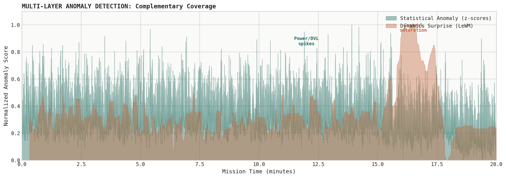
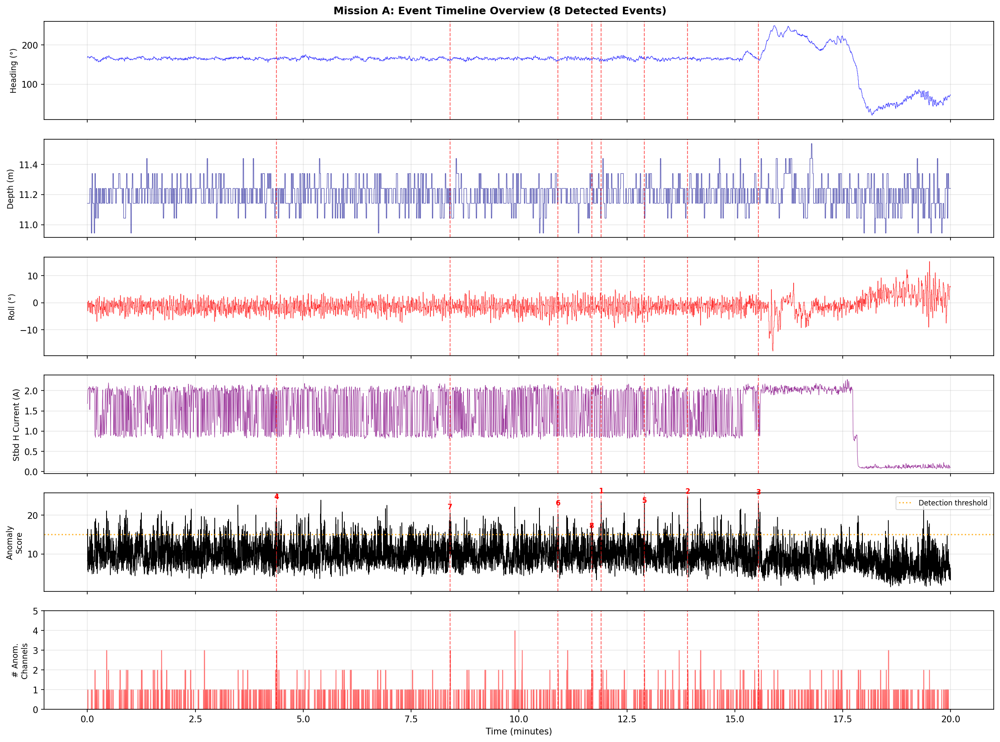
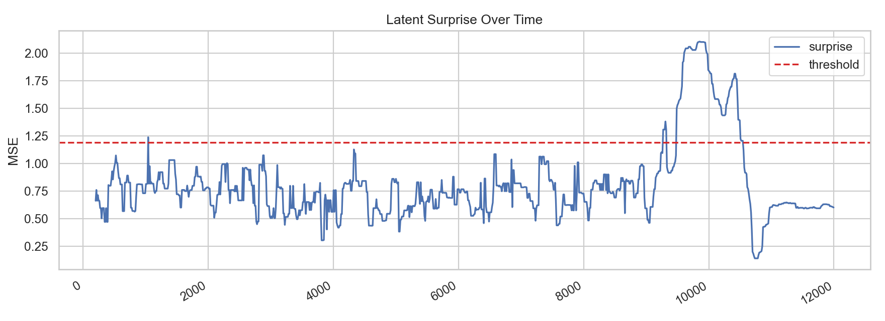
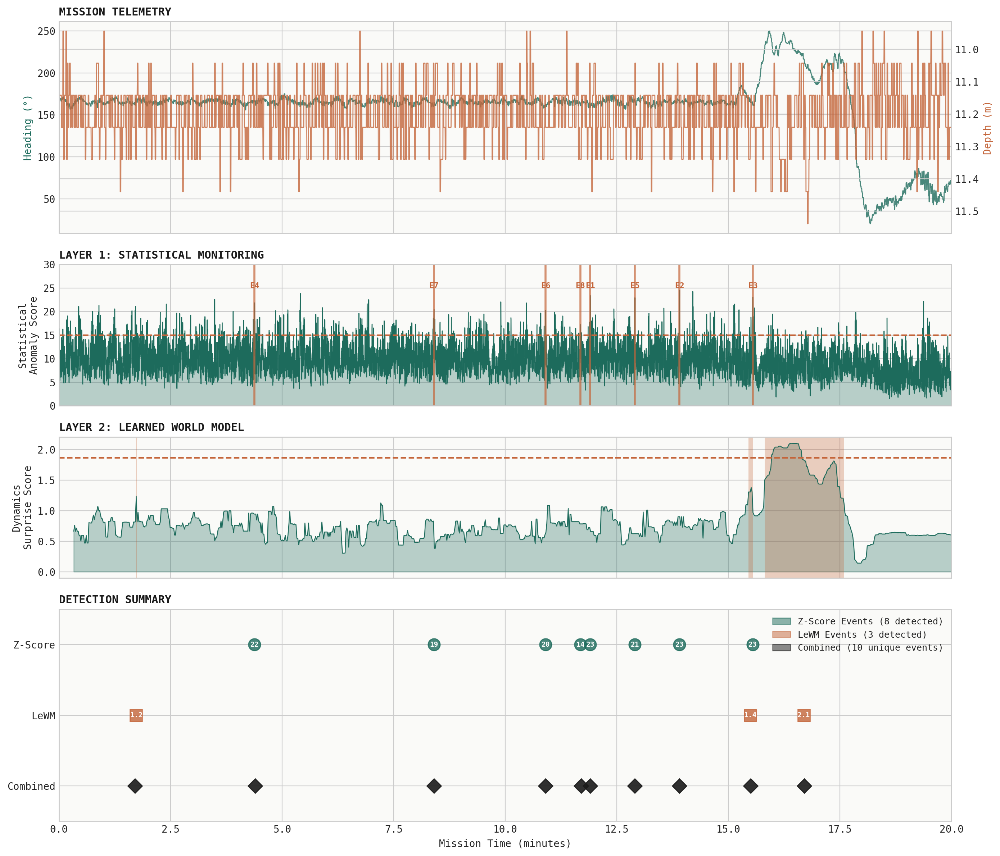
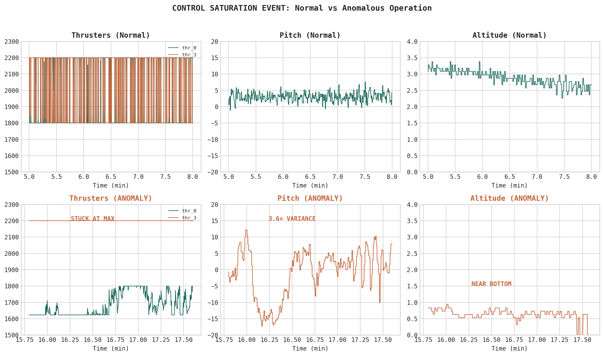
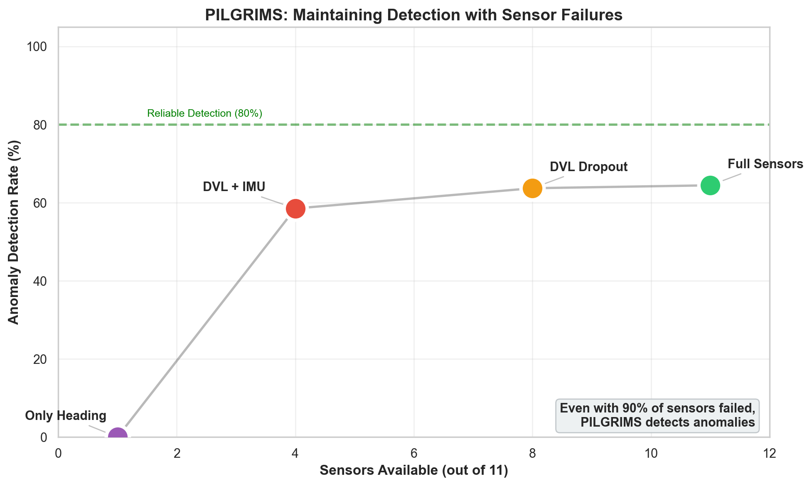
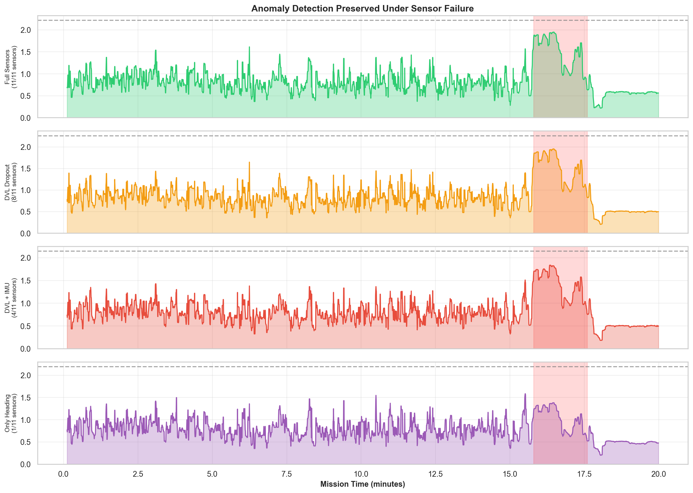

A two-layer anomaly detection system that combines statistical monitoring with learned dynamics prediction. Catches both obvious sensor spikes and subtle control anomalies that single-method approaches miss.
Statistical Events
Dynamics Events
Unique Anomalies
Nominal Data
Single-method anomaly detection has blind spots. Statistical methods catch sensor spikes but miss behavioral anomalies. Learned models catch dynamics deviations but lack interpretability. We combine both.
Rolling z-scores across 14 channels detect when individual sensors deviate from baseline. Real-time, interpretable, no training required.
JEPA-style neural network learns how sensor readings should evolve given thruster commands. Detects when dynamics don't match expectations.
Together: 10 unique events detected. Layer 1 alone: 8 events. Layer 2 alone: 3 events. Only 1 event detected by both — they catch different failure modes.

Real-time monitoring using rolling z-scores. When multiple channels simultaneously exceed 3σ thresholds, flag an event.
For each of 14 monitored channels, compute a rolling z-score using a 30-second baseline window:
z = (x - μ_baseline) / σ_baseline
Sum the absolute z-scores across all channels. When the total exceeds 15 and at least 2 channels are individually anomalous (|z| > 3), flag an event.

DVL current (ps_dvl_i) spikes to 8σ+ consistently 5-10 seconds before navigation stress events. This channel alone could serve as an early warning for challenging conditions.
A JEPA-style neural network that learns to predict future sensor states given past observations and commanded actions. High prediction error = anomaly.
The model encodes past observations and future actions into latent vectors, then predicts what the future latent state should be:
past_obs → [GRU] → z_context
actions → [GRU] → a_embed
[z_context, a_embed] → [MLP] → z_pred
surprise = MSE(z_pred, z_target)
Statistical methods ask: "Is this reading unusual?"
The learned model asks: "Given what we commanded, is this response expected?"
If thrusters fire hard and nothing happens — that's anomalous even if individual readings are in-range.

The unified view shows how both layers contribute unique detections. Neither layer alone would catch all anomalies.

| Time | Layer 1 (Statistical) | Layer 2 (Learned) | Primary Signature |
|---|---|---|---|
| 4.4 min | 21.9σ | — | Pitch dynamics + Highbrain spike |
| 8.4 min | 19.4σ | — | Aggressive turn maneuver (20°/s) |
| 10.9 min | 20.3σ | — | Depth change + DVL current spike |
| 11.7 min | 14.4σ | — | DVL quality drop (precursor) |
| 11.9 min | 23.4σ | — | Rapid depth change + DVL spike |
| 12.9 min | 20.9σ | — | Rapid ascent + DVL spike |
| 13.9 min | 23.3σ | — | Highbrain + DVL current anomaly |
| 15.5 min | 23.1σ | 1.38 | Thruster + Highbrain anomaly (both layers) |
| 15.8-17.6 min | — | 2.10 (89 windows) | Control saturation (Layer 2 unique) |
The learned model automatically flagged an operational stress period at 15.8-17.6 min. The raw signals are visible in telemetry — the value is automated detection of their combination.

thr_3 held constant at maximum (2200 PWM) for nearly 2 minutes. Normal operation shows continuous variation. Possible actuator limit or control loop issue.
Pitch variability 3.6× higher than normal. With one thruster maxed out, the vehicle may have limited control authority to maintain stable attitude.
Altitude dropped to 0.6m (vs 2.0m typical). Operating close to the seafloor while experiencing control issues — a potential risk scenario.
Individual channel values weren't extreme — thruster at 2200 is within normal range, pitch excursions were under 20°, altitude of 0.6m is valid. But the relationship between commands and responses was anomalous. The learned model detected this because it knows: when thrusters command hard, attitude should stabilize — not oscillate 3.6× more than normal.
PILGRIMS maintains anomaly detection even when sensors fail. The learned model captures cross-channel correlations — if DVL drops out, attitude and thruster response can still reveal anomalies.

64% detection rate with SNR 3.4. Strong statistical significance (Cohen's d > 2).
64% detection rate maintained. Navigation sensor loss doesn't break detection.
59% detection rate. Even with majority sensor loss, anomalies remain detectable.
0% detection. Graceful degradation — failure occurs at extreme sensor loss only.

Surprise signal remains elevated in the anomaly window (red shading) across sensor configurations until extreme dropout.
Real autonomous systems experience sensor failures. DVL dropouts are common in underwater vehicles. PILGRIMS doesn't just detect anomalies — it maintains detection capability even when the vehicle is already partially degraded. This is the difference between learned correlations and simple threshold monitoring.
All mission data analyzed represents normal vehicle operation. No labeled failures, warnings, or error states are present — the events detected are operational stress points, not confirmed failures.
| What We Demonstrated | What Labeled Failure Data Enables |
|---|---|
| Detect stress signatures in nominal data | Validate if detected events precede real failures |
| Identify leading indicators (DVL current, dynamics surprise) | Measure actual lead time before failures |
| Two complementary detection layers | Tune thresholds for precision/recall tradeoff |
| Unsupervised anomaly scoring | Train supervised classifiers for specific failure modes |
Add /rosout to rosbag configuration. This captures ROS error and warning messages as the first level of failure labeling.
Share any missions where something went wrong — even partial logs. A single failure example allows validation and tuning of detection thresholds.
Implement the statistical layer for live monitoring. Log when alerts fire vs. when actual issues occur to build labeled training data.